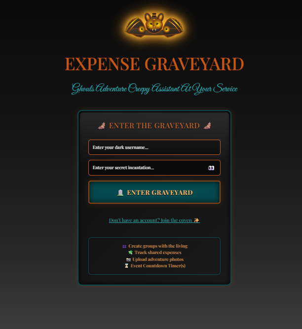

React
Bootstrap
API
CSS
ü™¶ Expense Graveyard
A React.js expense tracking application that calculates shared costs for groups across dining and hotel expenses, featuring a horror-themed interface with graveyard imagery. Features dynamic expense splitting, customizable tax calculations, real-time cost breakdowns, and API integration for weather data and lunar phases.
View Project
(opens in new tab)
React
Featured